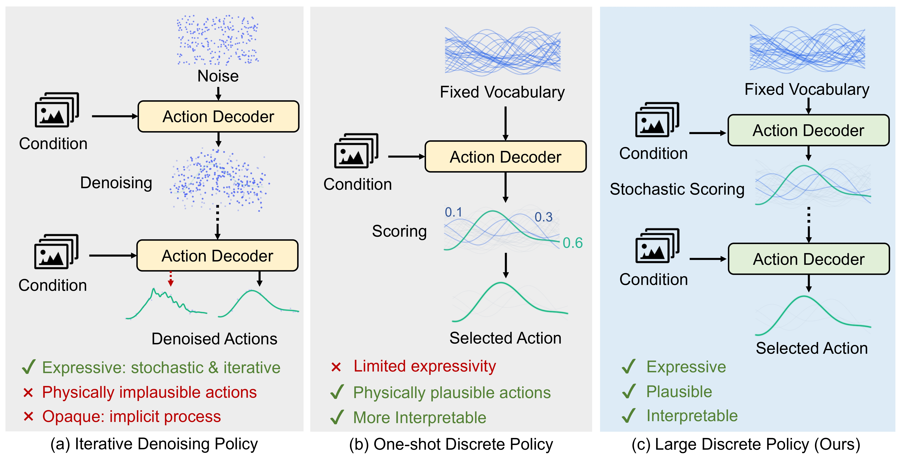
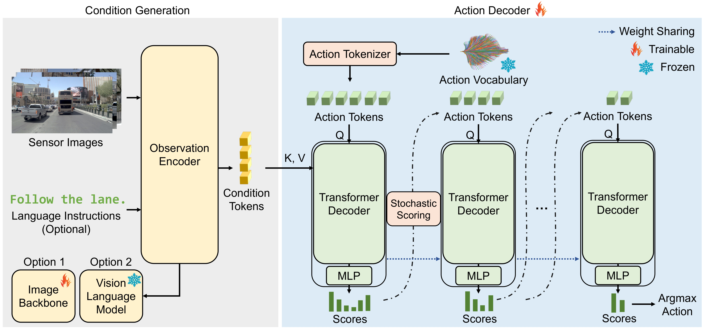
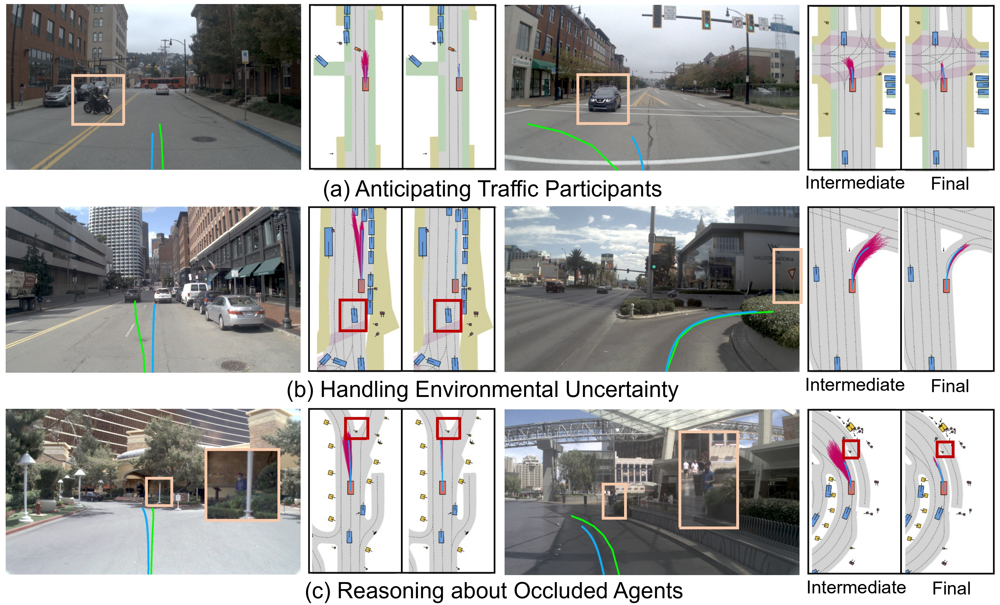

1
Build a Large Action Vocabulary
Offline demonstrations are segmented into fixed-horizon action chunks and clustered into a large vocabulary of physically plausible candidates.
Behavior policies are often formulated as continuous generative models, whose iterative denoising processes are expressive but difficult to interpret and prone to producing implausible actions. We propose the Large Discrete Policy (LDiP), a fully discrete behavior modeling framework that selects actions from a large vocabulary of physically plausible candidates.
Rather than perturbing actions, LDiP improves expressivity through stochastic iterative scoring: it progressively re-scores and prunes candidates with score-space stochasticity, enabling fine-grained ranking and exploration among plausible actions while preserving an explicit decision process. Across end-to-end planning, closed-loop driving, robotic manipulation, and vision-language-action settings, LDiP consistently outperforms strong discrete and continuous baselines in autonomous driving, and exceeds or matches continuous generative policies in robotic manipulation.
Continuous denoising policies offer strong expressivity, but their action generation process is implicit and may generate physically implausible actions. One-shot discrete policies are explicit and interpretable, yet can be bottlenecked by single-pass ranking over many near-optimal candidates. LDiP keeps the action vocabulary fixed and plausible, then makes the scoring process deeper and more expressive.

Offline demonstrations are segmented into fixed-horizon action chunks and clustered into a large vocabulary of physically plausible candidates.
Candidate actions are tokenized and decoded given visual observations, and optionally language tokens with a Transformer decoder, before the MLP scores each candidate.
LDiP progressively keeps top candidates, re-scores the smaller set, and narrows the decision until one executable action remains.
During training, Gumbel noises are applied to scores before top-k selection, encouraging exploration among plausible candidates without corrupting actions.

We first visualize the NAVSIM/Navtest iterative scoring process: early stages preserve diverse plausible futures, while later stages concentrate on scene-consistent trajectories.
Selected trajectory Human trajectory Remaining vocabulary

PushT and ToolHang rollouts. Each video is split into two views: the left side shows final-stage action proposals, and the right side shows the final selected action.
In Progress